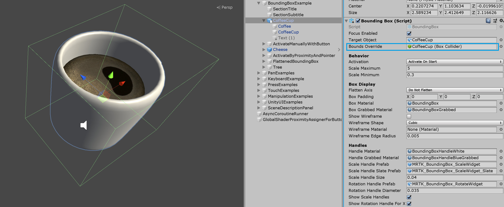
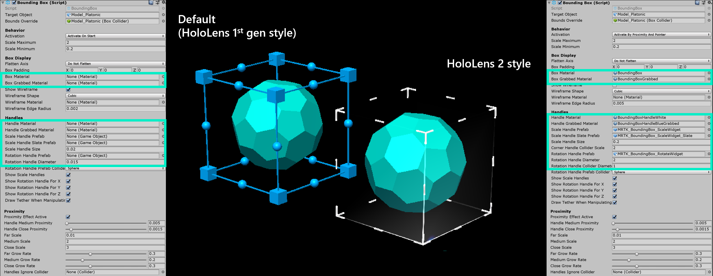
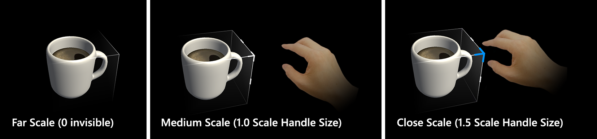

边界框 Bounding box

BoundingBox.cs脚本提供了在混合现实中转换对象的基本功能。一个包围盒将在全息图周围显示一个立方体，表明它可以与之交互。立方体的角和边的地方允许缩放或旋转对象。包围框也对用户输入做出反应。例如在HoloLens 2上，边界框会对手指的距离做出反应，提供视觉反馈，帮助感知到物体的距离。所有交互和视觉效果都可以轻松定制。
更多信息请参见 Windows Dev Center的 边界框和应用程序栏。
示例场景
你可以在BoundingBoxExamples场景中找到边界框配置的例子。

如何使用 Unity Inspector 添加和配置一个边界框
- 向对象添加 Box Collider
- 将
BoundingBox脚本分配给一个对象 - 配置选项，例如'Activation'方法(参见下面的Inspector 属性一节)
- (可选)为HoloLens 2风格边界框分配预制体和材质(参见Handle 样式一节)
Note
在inspector中使用Target Object和Bounds Override字段来指定具有多个子组件的对象中的特定对象和collider。

如何在代码中添加和配置边界框
实例化 cube GameObject
GameObject cube = GameObject.CreatePrimitive(PrimitiveType.Cube);使用AddComponent<>()，将
BoundingBox脚本分配给一个有collider的对象private BoundingBox bbox; bbox = cube.AddComponent<BoundingBox>();配置选项(参见 Inspector 属性一节)
// Make the scale handles large bbox.ScaleHandleSize = 0.1f; // Hide rotation handles bbox.ShowRotationHandleForX = false; bbox.ShowRotationHandleForY = false; bbox.ShowRotationHandleForZ = false;(可选)为HoloLens 2风格的边界框指定预制体和材质。这仍然需要通过inspector分配任务，因为材质和预制体应该是动态加载的。
Note
使用Unity的 'Resources' 文件夹或Shader.Find来动态加载着色器，因为在运行时可能会丢失着色器排列。
bbox.BoxMaterial = [Assign BoundingBox.mat]
bbox.BoxGrabbedMaterial = [Assign BoundingBoxGrabbed.mat]
bbox.HandleMaterial = [Assign BoundingBoxHandleWhite.mat]
bbox.HandleGrabbedMaterial = [Assign BoundingBoxHandleBlueGrabbed.mat]
bbox.ScaleHandlePrefab = [Assign MRTK_BoundingBox_ScaleHandle.prefab]
bbox.ScaleHandleSlatePrefab = [Assign MRTK_BoundingBox_ScaleHandle_Slate.prefab]
bbox.ScaleHandleSize = 0.016f;
bbox.ScaleHandleColliderPadding = 0.016f;
bbox.RotationHandleSlatePrefab = [Assign MRTK_BoundingBox_RotateHandle.prefab]
bbox.RotationHandleSize = 0.016f;
bbox.RotateHandleColliderPadding = 0.016f;
示例:使用TransformScaleHandler设置最小、最大边界框比例
要设置最小和最大规模，使用TransformScaleHandler。您还可以使用TransformScaleHandler来设置ManipulationHandler的最小和最大范围。
GameObject cube = GameObject.CreatePrimitive(PrimitiveType.Cube);
bbox = cube.AddComponent<BoundingBox>();
// 重要提示:如果不存在scale handler，BoundingBox将在启动时创建
// 不要使用AddComponent，因为它会创建一个不被使用的重复handler
TransformScaleHandler scaleHandler = bbox.gameObject.GetComponent<TransformScaleHandler>();
scaleHandler.ScaleMinimum = 1f;
scaleHandler.ScaleMaximum = 2f;
示例:在游戏对象周围添加边界框
要在一个对象周围添加一个边界框，只需添加一个边界框组件:
private void PutABoxAroundIt(GameObject target)
{
target.AddComponent<BoundingBox>();
}
Inspector 属性
Target Object
此属性指定边框操作将转换哪个对象。如果没有设置对象，则边界框默认为所有者对象。
Bounds Override
从对象中设置一个用于边界计算的box collider 。
Activation Behavior
有几个选项可以激活边界框接口。
- Activate On Start: 一旦场景开始，边界框就变得可见。
- Activate By Proximity: 当一个关节的手靠近物体时，边界框变得可见。
- Activate By Pointer: 当手部射线指针瞄准时，边界框变得可见。
- Activate Manually: 边界框不会自动显示。您可以通过脚本访问boundingBox.Active属性手动激活它。。
Scale Minimum
最小允许比例。这个属性是不推荐的，最好添加一个TransformScaleHandler脚本。如果添加了这个脚本，那么将从它而不是从BoundingBox获取最小比例。
Scale Maximum
允许的最大比例。这个属性是不推荐的，最好添加一个TransformScaleHandler脚本。如果添加了这个脚本，那么将从它而不是从BoundingBox获取最大比例。
Box Display
各种边框显示选项。
如果Flatten轴被设置为Flatten Auto，脚本将不允许沿着最小范围的轴进行操作。这将产生一个2D边界框，通常用于细小对象。
Handles
您可以指定材质和预制体来覆盖handle样式。如果没有分配handle，它们将以默认样式显示。
Events
边界框提供以下事件。本例使用这些事件来播放音频反馈。
- Rotate Started: 旋转开始时触发。
- Rotate Ended: 旋转结束时触发。
- Scale Started: 缩放开始时触发。
- Scale Ended: 缩放结束时触发。
Handle 样式
默认情况下，当你分配BoundingBox.cs脚本时，它将显示HoloLens第一代风格的handle。要使用HoloLens 2风格的handle，你需要分配适当的处理预制体和材质。

下面是HoloLens 2风格的边框handles的预制体、材质和比例值。你可以在BoundingBoxExamples场景中找到这个例子。
Handles (HoloLens 2 风格设置)
- Handle Material: BoundingBoxHandleWhite.mat
- Handle Grabbed Material: BoundingBoxHandleBlueGrabbed.mat
- Scale Handle Prefab: MRTK_BoundingBox_ScaleHandle.prefab
- Scale Handle Slate Prefab: MRTK_BoundingBox_ScaleHandle_Slate.prefab
- Scale Handle Size: 0.016 (1.6cm)
- Scale Handle Collider Padding: 0.016 (makes the grabbable collider slightly bigger than handle visual)
- Rotation Handle Prefab: MRTK_BoundingBox_RotateHandle.prefab
- Rotation Handle Size: 0.016
- Rotation Handle Collider Padding: 0.016 (makes the grabbable collider slightly bigger than handle visual)
接近 (HoloLens 2 风格设置)
显示和隐藏具有动画的handles，基于与手的距离。它有两步缩放动画。
- Proximity Effect Active: 启用基于接近的handle激活
- Handle Medium Proximity: 第一步缩放的距离
- Handle Close Proximity: 第二步缩放的距离
- Far Scale: 手在边界框交互作用范围之外时，handle资源的默认scale值(距离由上面的'Handle Medium Proximity'定义。默认使用0隐藏handle)
- Medium Scale: 当手在边界框交互作用范围内时，handle资源的scale值(距离由上面的'Handle Close Proximity'定义。使用1显示正常大小)
- Close Scale: 当手处于抓取交互作用范围内时，handle资源的scale值(距离由上面的'Handle Close Proximity'定义。使用1.x显示较大尺寸)
使用manipulation handler使对象可移动
一个边界框可以与ManipulationHandler.cs结合使用远程交互使对象可移动。manipulation handler支持单手交互和双手交互。手势跟踪可用于近距离与物体进行交互。
为了使边界框边在使用ManipulationHandler的远端交互移动时具有相同的行为，建议将其事件On Manipulation Started / On Manipulation Ended 分别连接到' BoundingBox.HighlightWires / BoundingBox.UnhighlightWires，如下面的截图所示。